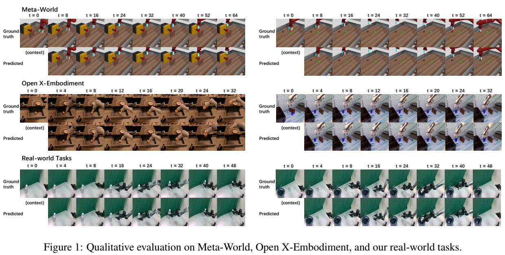
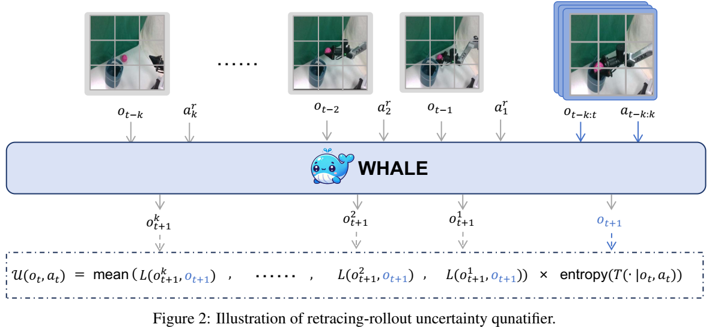
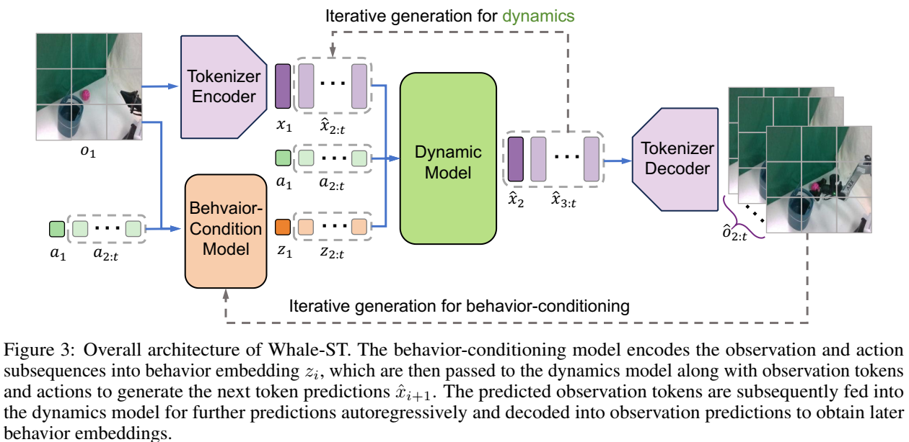

论文阅读三十五：WHALE：面向具身决策的可推广和可扩展的世界模型
摘要
世界模型在具身环境的决策中至关重要，实现无成本的探索，若在真实世界将是昂贵的。为了促进有效决策，世界模型必须具备强大的泛化能力来支持分布外（OOD）区域的忠实想象，且提供可靠的不确定性估计来评估模拟经验的置信度，两者都都先前扩展方法提出了重大挑战。本文引入WHALE，学习可泛化世界模型的框架，包含两种关键技术：行为调节（behavior-conditioning）和回溯推断(retracing-rollout)。行为调节解决策略分布漂移，世界模型泛化误差的主要来源之一，而回溯推断无需模型集成可实现有效的不确定性估计。这些技术是通用的，可以与任意神经网络架构结合来进行世界模型学习。结合这两种技术，我们推出Whale-ST，一个可扩展的基于时空transformer的世界模型，具有强大的泛化能力。我们展示了Whale-ST 在模拟任务种的优越性，通过评估值估计精度和视频生成保真度。此外，我们测试了我们不确定估计技术的有效性，它在全离线场景中增强了基于模型的策略优化。进一步地，我们提出Whale-X，一个414M参数世界模型，在来在 Open X-Embodiment数据集的970k轨迹上训练。我们通过最少的演示证明，Whale-X展示了在真实世界操作场景良好的可扩展性和强大的泛化能力。 论文地址
引言
人类可以在脑海中想象一个想象中的世界，预测不同的行动可能会如何导致不同的结果[1,2]。受人类智能的这个方面的启发，世界模型[3]旨在抽象真实世界动态性，并提供诸如“如果那么”的预测（what if）。因此，具身代理可以与世界模型交互，而不是真实世界环境，来生成模拟数据，可以用于各种下游任务，包括反事实预测（counterfactual prediciton）[4]、无策略估计[5]，和离线强化学习[6]。促进更加有效的决策的需求表明世界模型广泛的大量挑战，这是先前方法不足以解决的问题[7]。此外，为想象的视觉经验取得可靠的不确定性估计仍是重大挑战，影响合成数据在离线策略优化中的可信赖的利用[8]。这两个待决问题阻碍了世界模型在支持决策中的进一步成功。

本工作中，我们引入WHALE（具有行为调节和回溯推断学习的世界模型），一种学习可泛化世界模型的框架，包含两种关键技术，可以通用于结合任意神经网络架构。首先，基于策略分布多样性识别作为泛化误差主要来源，我们引入行为调节技术来增强世界模型的泛化能力，它构建在策略调节模型学习之上，旨在使模型能够适应不同行为，缓解由分布漂移引起的推断误差。此外，我们提出一个简单有效技术，称为回溯推断，来实现对模型想象的高效的不确定估计。这种方法避免了计算昂贵的视觉世界模型的集成的需要，同时提供可靠的不确定估计来促进在全离线场景中的策略优化。作为即插即用解决方案，回溯推断可以有效应用到各种具身任务中的末端执行器位姿控制，而无需训练过程的任何改变。
为实现HALE框架，我们推出Whale-ST，可扩展的具身世界模型，基于时空transformer[10,11]，旨在为真实世界视觉控制任务实现忠实的长视野想象。为证实Whale-ST的有效性，我们在模拟Meta-World[12]基准和物理机器人平台上执行大量实验，包含了各种基于像素的操作任务。在模拟任务上的实验结果表明，Whale-ST在值估计精度和视频生成保真度中都优于现有世界模型学习方法。而且，我们证明，Whale-ST，基于回溯推断技术，有效地捕获了模型误差，并使用想象经验增强离线策略优化。进一步，我们推出Whale-X，一个414M参数的世界模型，训练在来自Open X-Embodiment数据集[13]中的970k真实世界示例。通过在完全未见过的环境和机器人中对一些演示进行微调，Whale-X在视觉、运动和任务视角上展示了强大的面向对象设计通用性。此外，通过扩大预训练数据集或模型参数，Whale-X在预训练和微调阶段都表现出了令人印象深刻的可扩展性。
本工作的主要贡献概述如下：
- 我们引入WHALE，一种学习可泛化的世界模型的框架，包含两种关键技术：行为调节和回溯推断，来解决世界模型决策应用中的两个主要挑战：泛化和不确定性估计；
- 通过整合WHALE的这两种技术，我们提出了WHALE-ST，这是一种可扩展的基于时空transformer的世界模型，旨在实现更有效的决策，并进一步提出了WHALE-X，一种在970K机器人演示上预训练的414M参数世界模型；
- 我们进行了广泛的实验，以证明Whale-ST和Whale-X在模拟和现实任务中的显著可扩展性和通用性，突出了它们在增强决策方面的功效。
相关工作
世界模型有着悠久的研究历史，最近开始受到广泛关注。世界模型初始提出时名为“动作模型”，是在简单任务中作为决策系统的组件，也在文献中称为“环境模型”[16]、“动态模型”[17，18]或简单地“模型”[19]。优于神经网络领域的发展，动态模型已经广泛应用到深度强化学习算法，来提升学习效率，从而出现了一系列基于模型的强化学习算法[19,20,8,21,18]，然而它们主要侧重于低维本体感知（proprioceptive）状态空间的环境建模。[3]首先提出具有高维视觉观测的当今世界模型的一般框架，其中，视觉模块编码观测图像到紧凑的潜在向量，提取当前时间步的视觉信息，同时，记忆序列模型结合历史编码来创建可以预测未来任务的表示。这种通用的世界模型架构很快在复杂的决策任务中取得了一系列显著的成功[22,23,24,25,26]。
尽管世界模型学习取得这些成功，分布外泛化仍是世界模型的基础挑战，尚未得到充分解决。不同于没有或者轻度OOD假设的传统监督学习设置，其中目标分布类似于训练数据分布，世界模型回答“如果那么”问题：“如果代理做出任意可能决策，那么环境中会发生什么？”，这是必须高度分布外的。这种泛化问题的一种潜在方案是收集更大量数据来训练大规模的世界模型。最近，先进方法已经利用当今动作调节视频预测模型[27,28]来建模视觉动态，以及从大规模视频体验数据[11,29,30]预训练。这些方法采用了各种复杂的模型架构，包括RNNs[31,22,32]、扩散模型[33,34]，和Transformers[35,36,11]。尽管如此，用于模型学习的可用训练数据常常是由专家或近专家（near-expert）策略收集，导致状态动作空间的低数据覆盖率，这对推理学习世界模型中次优策略的决策结果提出了挑战[7]。
另一项研究探讨了学习方法对世界模型泛化能力的影响。对于单步转换的标准最大似然目标，自回归推出误差或值差距与分布误差和政策分歧有关，并被推出范围二次放大，这种现象被称为复合误差[19,37,38]。为了克服标准MLE学习的局限性，已经进行了一系列改进，包括训练多步模型以减少推出误差[39,40]，使用控制目标训练转换模型[41,42]，对抗性训练反事实目标策略模型[4]，学习动态奖励以提高模型泛化[43]，对比学习能量转换函数[44]，以及将策略信息纳入模型输入以使测试时模型适应目标策略[9]。尽管在低维本体感觉观察任务中取得了成功，但将这些方法扩展到大量高维视觉数据仍然不存在。引入适用于用大规模数据训练大世界模型的先进学习方法来提高模型的泛化能力具有前所未有的重要性。
除了泛化之外，世界控制模型中的另一个关键主题是不确定性估计。已经表明，从部分覆盖数据中学习的世界模型内的离线决策容易受到模型预测误差的利用[8,45]，这需要量化世界模型的预测不确定性，并提醒代理对模型不确定性保持悲观[8,46,47,18]。这些典型的算法通过并行学习的多个模型的集成来估计模型的不确定性[48]，这非常消耗计算量，特别是对于大规模任务和模型。最近的工作[49,50]采用分类标记预测分布的熵作为大型语言模型（LLM）的不确定性指标，尽管对其在离线模型控制中的有效性支持有限。
世界模型学习的基础
问题表述
典型的序列决策任务形式是马尔可夫决策过程（MDP）[51,52]，规定为元组 ,其中S是状态空间，A是动作空间，r(s,a)是奖励函数， 是真实转移概率， 是折扣因子，H是决策视野， 是初始状态分布。在本工作中，我们简单考虑 和 的情况。
在强化学习中[53]，目标是在MDP中学习一个最大化期望回报的策略，它涉及估计不同策略的值。具体地，策略 的值定义为：
其中，状态动作轨迹 ，奖励由策略 在动态 中推断产生的。一个常见的场景涉及大量预先收集的经验数据，但与环境的直接交互要么被禁止，要么成本高昂，因此需要离线进行值估计。
环境模型T可以显示从离散数据学习，来模拟真实状态转移 ，合成想象体验来模拟真实环境交互。对于视觉观测任务，代理不能直接观测状态；而是，它接收观测空间 中高维图像，这通常引入冗余信息和部分观测。视觉世界模型[3]通常学习一个视觉模块 : 来从当前帧的观测 中提取压缩表示 ，并使用序列模型来结合来自过去帧的潜在表示 以及动作 来克服部分观测，从而进行未来预测。世界模型的这种架构增强了对任意给定策略的自回归想象，无需真实世界交互实现策略估计和改进。
假设 是模型T中的值估计，环境模型误差导致策略 的值间隙 。若模型全局精确，对于任意策略值间隙将消失。然而，离线体验通常由窄范围策略（即，近专家策略）收集。因此，学习到的环境模型可能不熟悉新颖决策模式的结果，希望实现训练体验之上的泛化，从而为反事实推理评估多样化的策略。
世界模型的泛化能力
世界模型的常见学习方法，将变换学习视作标准监督学习问题，以一种教师强制的方式，在预收集的轨迹上最小化单步转移概率的负对数似然（NLL），即：
其中，(子)轨迹 ， 由行为策略 在真实动态 交互产生，且行为 假设从行为策略分布 中采样。最小化NLL等价于最小化KL散度损失 。
学习的世界模型通常以自回归的方式，通过模拟轨迹，用于评估任意目标策略 ：
其中，轨迹模拟分布偏离了训练分布。
在经典的顺序建模任务中，如句子生成和翻译，随着模型准确性的提高，从教师强制训练到自回归生成的分布转变会减少，因此不会产生显著的负面影响。然而，对于世界模型学习，分布变化是由模型预测不准确以及目标策略和行为策略之间的分歧造成的，加剧了评估的不准确：
其中除了KL训练损失之外还出现由策略发散引起的分布偏移项，进一步通过由监督教师强制学习引起的 因子放大。即便世界模型完美建模训练分布，即， ，目标策略的变化也将显著漂移轨迹模拟分布到那些较大的误差区域，导致退化泛化能力。
世界模型学习的泛化问题已经被认为是重大挑战，即便当大型专家训练数据可用时。此前，已经提出了解决方案。
- 通过分布匹配替换教师强制目标解决复合误差[37]， 将 项减小到H。
- 基于能量的模型可以帮助减小分布内误差[44]，从而免除了神经网络拟合形状不佳的转移函数的需要。
- 对抗性反事实学习[4]减缓策略发散的问题。
- 学习一个环境奖励来约束世界模型可以极大帮助泛化到数据分布之外[43]。
同时，上述方法全部基于对抗性学习，当前难以扩展。在[9]，发现了一种增强泛化的新方式，通过在训练过程中强制执行策略条件来学习泛化。本文继承和改进了这种方法。
学习泛化世界模型用于具身决策
世界模型中的序列化决策通常需要代理来探索超越训练数据集的分布外（OOD）区域。这要求世界模型表现出强大的泛化能力，使其能够做出与现实世界动态密切相关的准确预测。同时，可靠地量化预测不确定性，尤其是世界模型有效泛化范围之外的变换，对于稳健的决策至关重要，这防止离线策略优化利用错误的模型预测。考虑到这些问题，我们提出WHALE，一种学习可泛化的世界模型的框架，能够增强泛化能力和高效的不确定性估计。
行为调节用于泛化
根据方程（2）中的误差分解，世界模型的泛化误差主要来源于策略发散引起的误差复合。为减小此误差，该策略泛化问题的一种可能的方法是将行为信息嵌入到世界模型，允许模型主动识别策略的行为模式，并适应策略诱导的分布漂移[9]。这种适应效应已经被证明，可以减少由策略发散引起的模型泛化误差，即方程（2）的最后一项。为了进一步分析，请参考附录A。基于行为调节概念，我们引入一个学习目标来从训练轨迹获得行为嵌入，并结合学习到的嵌入。
我们希望提取轨迹 中的决策模式到行为嵌入，这让人想起基于历史 的轨迹似然的置信下限（ELBO）的最大化[54,55,56]：
其中， 表示后验编码器，编码整个估计 到一个潜在变量z； 表示解码器，从潜在变量z及其更新历史 中恢复决策动作； 表示先验预测器，允许基于历史 预测z。信息瓶颈需要学习的变量z来有效捕捉轨迹中的决策模式，嵌入关于相应行为策略的信息。据此，我们提出通过最大化H决策步上的ELBOs，以及调整类似于 的KL的约束量，来学习行为嵌入：
这里，KL 项限制了每个时间步长 h 的子轨迹的嵌入预测，鼓励它们近似后验编码。这确保表示保持了策略一致性，意味着由同样策略生成的轨迹展示类似的行为模式，和类似的表示。
学习的先验预测器 然后用于从历史 获得行为嵌入 ，用于在世界模型训练中进行行为调节，其中行为嵌入作为额外的协变量，进一步预测：
在学习世界模型中推出目标策略或执行动作序列时，先验预测器从交互历史中推断潜在行为意图，从而使自回归生成过程能够动态调整目标分布，以便自适应地进行未来的想象。
不确定性估计的回溯推断
世界模型中的代理可以采取任意动作来生成想象的未来，这可能与离线数据集存在显著差异。因此，世界模型不可避免地会产生不准确和不可靠的样本。先前工作已经在理论和实验中表明，如果我们无限制地使用模型生成的数据，策略的执行可能会受到严重破坏[8,45]。因此，不确定性估计对于世界模型至关重要，因为它可以指示何时信任我们的模型。
先前用于世界模型的基于集成的不确定性估计方法，常常需要训练多个方法[48,18]，使得计算昂贵，尤其对于大规模任务和复杂模型。此外，任意步骤（any-step）不确定性估计[58]已成为一种计算效率高的替代方案，它利用各种长度的历史信息的预测差异，不依赖集成。然而，any-step专门设计用于循环神经网络，不能直接应用到transformers，限制了它在真实世界任务中的的扩展性能力和应用能力。为了解决该限制，我们引入一种新的不确定性估计方法，回溯推断，它受到any-step中变长历史概念的启发。回溯推断的核心创新在于回溯动作的引入，它在具身控制中，利用动作空间的语义结构，为基于transformer的世界模型实现了更加精确和高效的不确定性估计。
我们首先介绍回溯动作。具体来说，回溯动作可以等效地替代任意给定的动作序列。对于动作序列 ，它的相应的回溯动作定义为 ，目标是由机器人执行来自任意观测 的动作序列 产生的输出 几乎相同于当执行回溯动作 产生的输出 。得益于在具身控制中的动作空间的语义结构，回溯动作对于末端执行器位姿控制是计算可行的。例如，在Open X-embodied数据集，动作空间由7维向量定义，控制末端执行器。前三维表示夹持器未知的变化 ，接着的三维表示臂腕方向 ，最后一维决定夹持器的闭合。因此，回溯动作可以直接使用方程（5）计算，其中 表示动作 第j维的值。
接下来的概念是回溯推断。给定回溯步k，过程通过回溯到 作为推断的开始帧而开始。相应地对于动作序列 的回溯动作 从 执行，产生相应的输出 。实际中，为了防止多步累积回溯动作 超出动作空间范围， 被分割为k步。在每一步中，前六维设置为 ，而最后一维为 ，保持为常量，允许我们通过多步回溯取得预期产出。
最后，我们展示回溯推断不确定性量化，如图2所示。为估计 的不确定性，设置了不同追溯步来生成相应的回溯推断预测。我们然后计算特征水平的不一致，表示为感知损失，在从回溯推断中生成的输出和没有回溯推断的输出之间。此外，我们结合动态模型熵 的预测熵，它通常用于衡量模型自身的置信度。通过将平均不一致和预测熵相乘，我们推导最终的不确定性估计结果。值得注意的是，在训练阶段回溯推断不需要任何修改，相较于基于集成的方法，这极大地减少了计算开销。

WHALE的实际实现
本节中，我们展示WHALE的一个示例，Whale-ST，一个可扩展具有ST-transformer架构的世界模型。进一步，我们介绍Whale-X，一个414M参数的世界模型，在来自Open X-Embodiment数据集的970k真实世界示例训练。
使用ST-transformer架构实例化：Whale-ST

图3展示了Whale-ST的整体架构。具体地，Whale-ST包含三个主要组件：行为调节模型，视频分词器，和动态模型。受先前工作[11]启发，这些模块利用时空transformer（ST-transformer）架构。此框架中，每个标记被设计为仅关注当前帧中的其他标记以及先前帧中相应位置的那些标记。此外，Whale-ST可以一次性并行生成下一帧的全部标记。这些设计大大简化了计算需求，相对于序列长度从二次到线性依赖，减少了模型训练的内存占用和计算成本，同时增加了模型推理速度。
行为调节模型学习
行为调节模型包含基于CNN的视觉编码器 、基于ST-transformer的后验模型 、先验模型 ，和重建模型 。给定输入图像序列， 首先通过补丁化图像将它转换到标记。这些标记然后通过 和 处理，分别产生后验表示 ，先验表示 ，和重建动作 。因此，我们可以使用方程（4）中定义的损失函数来训练行为调节模型。对于行为嵌入，我们使用双热编码（two-hot encoding），因为它强大的表达能力和稳定的训练过程，如[22]所述。
世界模型学习
世界模型通常包含观测编码器，将原始观测编码到紧凑表示，和动态模型，预测在这个表示空间[3]中的未来变化。本工作中，我们采用基于VQ-VAE[59]的分词器作为编码器来离散化观测到标记，并在标记级别训练动态模型。
具体地，视频分词前期 包含编码器 和解码器 ，其中编码器 将视频输入压缩到标记序列，而解码器 实现从这些标记中重建原始视频。该分词器使用标准 VQ-VAE损失 训练，它是 重建损失、码本损失和承诺损失（commitment loss）的组合。
分词器训练之后，我们嵌入策略信息到动态模型学习过程。与标准动态模型学习的关键差异在于Whale-ST额外地结合由先验预测器 推断的行为调节 。该阶段，对于每个输入轨迹片段 ，视频分词器首先将它转化到标记序列 ，其中 表示第i帧的第j个标记。因此，动态模型的训练目标是最大化下一帧 的标记 的对数似然，基于历史标记 、历史动作 和行为调节 ：
直观上说，Whale-ST不仅接受历史作为离散特征来预测转移，还从历史中推断潜在决策意图来实现测试时适应来诱导分布漂移。
在真实世界机器人示例上预训练： Whale-X
我们接受Whale-X，一个414M参数世界模型，在来自Open X-Embodiment数据集的970k真实世界机器人示例上预训练。整个数据集用于预训练行为调节模型和视频分词器，同时数据的侧重子集用于训练动态模型。Whale-X作为用于评估真实世界行为的基础具身世界模型，能够生成真实可控的视频轨迹，与特定动作紧密对齐，如图1所示。
数据。Whale-X在Open X-Embodiment数据集13上预训练，它是一个综合数据集，包括超过70个独立机器人的数据集，由超过2M机器人轨迹，在一个大型社区的努力中，汇集成一种连贯且易于使用的数据格式。遵循[60]，我们的预训练数据集包含27个数据集，总大小为970k示例，我们在表11中列出了我们使用的数据混合和权重。为了训练一个专注于桌面任务的世界模型，我们从具有相似相机位置的数据集中提取与桌面任务相关的数据（表11中的粗体任务）来训练动力学模型，而视频标记器和行为调节模型是在完整的OpenX数据集上训练的。
讨论和限制
在本文中，我们介绍了WHALE，这是一个世界模型学习框架，它结合了行为条件机制和回溯推断技术，以增强分布外泛化和有效的不确定性估计。在此基础上，我们提出了Whale-ST，这是一种可扩展的基于ST变换器的世界模型，并在大规模现实世界机器人数据上预训练了414M参数Whale-X，以辅助物理机器人操纵。作为一个强大的世界模型，Whale-X具有很强的通用性和很好的可扩展性，即使在新的场景中，也能实现高保真的想象和准确的价值估计，从而促进下游控制任务。
局限性和未来的工作。尽管WHALE标志着重大进展，但未来的工作仍有很大的改进空间。一个局限性是现实世界机器人数据缺乏多样性，这些数据通常由范围狭窄的政策（例如接近最优的政策）收集。这对世界模型的泛化提出了重大挑战。此外，我们发现，具有视觉输入的奖励模型的质量在准确的价值估计中起着至关重要的作用，这仍然是未来研究的一个未解决的挑战。最后，我们必须提到，尽管与之前的方法相比，Whale-ST和Whale-X的泛化能力有了显著提高，但面对未知的现实世界任务的多样性和复杂性，它对于零样本转移仍然是有限的。将现有的先验知识整合到数据驱动的世界模型学习过程中可以实现更广泛的泛化，为长期研究提供了一条有价值的途径。